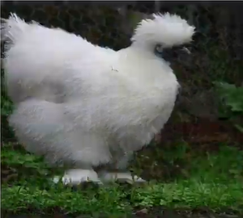

Silkie Chickens

The Silkie (sometimes spelled Silky) is a breed of chicken named for its typically fluffy plumage, which is said to feel like silksilk and satin. The breed has several other unusual qualities, such as black skin and bones, blue earlobes, and five toes on each foot.
They are often exhibited in poultry shows, and appear in various colors. In addition to their distinctive physical characteristics, Silkies are well known for exceptionally broody and care for young well.
History
It is unknown exactly where or when these fowl with their singular combination of attributes first appeared, but the most documented point of origin is ancient China.
